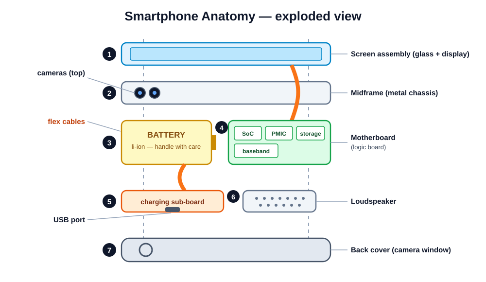

What's actually inside — and what every piece does.
Day 1 of 5 · afternoon block · ~1 h theory · bench practical · quiz
Start with 2–3 random students reciting safety rules from Module 1 (you promised this). Then hold up a closed phone: "By the end of today, you'll be able to name everything inside this and say what it does. A tech who can't name a part can't diagnose it."
Set expectations: today is a vocabulary and geography lesson — no repairs yet. Analogy: a doctor learns anatomy before surgery. Modules 3–8 are the surgery; today is the anatomy class.

Walk the layers top to bottom: screen assembly → frame/midframe → motherboard (top) + battery (middle) + charging board (bottom) → back cover. Key idea: a phone is a sandwich of layers, not a jumble. Every repair is "remove layers until you reach the broken one." Keep this diagram up while students orient their donor phones later.
resources/videos.mdPause the video at the fully-open shot and ask the counting questions. Point: far more connectors than beginners expect (often 8–12), and most parts aren't soldered at all — that's why module-level repair works without a soldering iron.
Screens are the #1 repair job. Module 4 is entirely about them — today, just learn the layers.
Hold up a cracked donor screen. Ask: "The glass is cracked but touch still works — what does that tell you?" (Digitizer and panel below are fine; only the top layer broke.) Tease Module 4: LCD vs OLED, quality tiers, the full replacement job.
Module 1 rule still rules: never pry, bend, or puncture. The battery is the one part that fights back.
Pass around a healthy (discharged) donor battery in a tray. Have students feel how soft the pouch is — a fingernail can dent it. Point out the little PCB at the flex end: "That's the battery's own bodyguard chip." Battery deep-dive comes in Module 5.
If the SoC dies, the phone is usually beyond economic repair. Everything we do protects it.
Project a bare donor board with a document camera if you have one, or pass boards around. "SoC" will be new vocabulary — drill it: System on a Chip, the brain. Ask why one big chip instead of many small ones (space, power, cost). Mention names they'll see in guides: Snapdragon, Exynos, Apple A-series.
Holds what the phone is doing right now. Empties when power is lost. Often stacked directly on the SoC.
Flash chip holding the OS, apps, photos. Keeps data without power. This is where customer photos live.
Customers care about storage — "can you save my photos?" is a storage question.
Use the workbench vs filing cabinet analogy and check understanding: "Phone reboots and the game restarts but photos survive — which chip is which?" Note for later modules: data recovery from a dead board means the storage chip survived; that's specialist work we refer out.
Diagnosis preview: "no power" often = PMIC area; "won't charge" often = charging IC or port. Naming the chip narrows the fault.
Keep it functional, not electronic — students don't need to know how a buck converter works, just what each chip is responsible for. Ask: "Phone plays music through headphones but the loudspeaker is silent — is the audio codec dead?" (Probably not — the codec serves both; suspect the speaker itself. This is diagnostic thinking already.)
"No signal" faults can be the modem, the antenna, or just an unplugged coax cable from a previous repair. Always suspect the cheap cause first.
Story: a phone comes in with "no network after screen replacement" — nine times out of ten the previous repairer left an antenna coax cable unplugged. That's a 2-minute fix billed as a diagnosis win. It teaches: know the radio chain, check connections before blaming chips.
resources/videos.mdPause on each chip and have the class call out its name and job before the narrator says it. Turn it into a rapid-fire game — the repetition is the point. After the video, hand out bare boards and have pairs point to the SoC and PMIC areas.
Module design is your friend: manufacturers build phones from plug-in blocks so their assembly lines are fast — which makes your repairs easy.
Pass around a camera module — students are always surprised how small it is. Big idea of the whole course: phones are modular. Most "repairs" are really module swaps. Caveat to mention: some newer phones pair cameras to the board in software (calibration/serialization) — always check the model's guide.
| Part | Where | Job | Fault sounds like |
|---|---|---|---|
| Earpiece | Top, above screen | Call audio to your ear | "I can't hear callers" |
| Loudspeaker | Bottom edge | Music, ringtones, speakerphone | "No ringtone / silent videos" |
| Microphones (2–3) | Bottom, top, rear | Your voice; noise cancelling | "Callers can't hear me" |
Role-play intake: read each customer complaint from the right column and have the class name the suspect part. Point out mic holes on a real phone — students often think the speaker grille is the mic. Bonus: the top and rear mics do noise cancelling, so "callers hear me but I sound far away" can be a secondary mic fault.
Show the plastic antenna lines on a metal-framed phone and let students find them on their own phones — instant "I never noticed that!" moment. Explain: a solid metal box is a Faraday cage; the plastic breaks divide the frame into antenna segments. This is why bending a frame in a drop can cause signal problems.
A torn trace inside a flex is invisible. The cable looks fine — the part just doesn't work. Handle every flex like it's already half-broken.
Demo with a sacrificial flex from a dead donor: crease it sharply, show it still looks OK. "The copper inside is thinner than hair — it cracked when I folded it." Rule to preach: never pull a flex, never fold one sharper than it was folded at the factory. This is tomorrow's #1 beginner mistake in Module 3.
Like a tiny LEGO — press to click, pry to pop. Used for screens, batteries, cameras. Opens with a plastic spudger, straight up.
Zero Insertion Force: a flip-up latch clamps a bare flex end. Flip the latch first, then slide the cable out. Never pull against a closed latch.
Demo both on a donor under the document camera: click a press-fit connector in and out (let students hear the click), then flip a ZIF latch with a spudger tip. Warning for Module 3: forcing a press-fit at an angle bends its pins, and pulling a flex from a closed ZIF tears the cable. Recognition today prevents damage tomorrow.
resources/videos.mdAnswers: battery = board-to-board press-fit (on nearly every modern phone); ZIF latch = fingernail or spudger tip, gently. Replay the press-fit "pop" in slow motion if the video allows — the straight-up motion is the skill they'll be graded on in Module 3.
Demo the SIM eject on a donor — let students feel the spring. Horror story: customers jam pins into the mic hole next to the SIM hole and kill the mic; teach them to identify the right hole. For sensors, cover the proximity sensor during a call to show the screen blank. EMI shields matter in Module 3: some pop off, some are soldered — never force one.
| Charger / USB port 5–20 V in |
→ | Charging IC → Battery → PMIC safe charge · store · distribute |
→ | SoC the brain |
→ | Display · Radios · Cameras · Audio everything you see & hear |
Diagnosis follows this chain: no charge? Look left. No boot? Look middle. Boots but a part is dead? Look right.
Draw this chain big on the whiteboard and keep it there for the rest of the course — it's the skeleton for every diagnosis module. Quiz the class: "Phone charges fine but never turns on — which zone?" (middle: PMIC/SoC). "Turns on but no signal?" (right: radio branch). This one diagram makes them think in systems.
Then find the guide: search the model code + "teardown" or on ifixit.com. Professionals look it up every time — memory is for concepts, guides are for screws.
Live demo: pick a student's phone, find the model code two ways, then pull up its ifixit guide on the projector. Emphasize the culture point: checking the guide is professionalism, not weakness. This becomes the "golden habit" rule in Module 3 — plant it today.
Class: listen for anything missed — you're the reviewers.
Give the first volunteer a real bare board and a pointer. If they blank on a chip, open it to the class before helping. The connector teach-back should include the LEGO analogy and the ZIF latch-first rule — if those two ideas stick, Module 3 goes smoothly.
| Station | Task |
|---|---|
| A | Identify & label 15 components in an open donor phone |
| B | Connector mapping: on a bare board, mark every connector & its type |
| C | Component scavenger hunt — find named parts across mixed donors |
| D | Model-ID exercise: identify exact models & pull up their repair guides |
Worksheet: practicals/practical-02-anatomy-components.md
Phones at Station A are pre-opened by you — students identify, they don't disassemble (that's Module 3). Keep wrist straps on anyway: build the habit even for look-only work. Rotate every ~25 minutes; grade the labelled diagrams at Station A against the answer key as you circulate.
Next: Module 3 — taking one apart (and getting it back together).
Hand out the quiz from assessments/module-quizzes.md; do bench inspections while they write. Tell them to bring nothing special next session — donors are provided — but warn them: Module 3 is where the graded teardowns begin, and screw maps count.